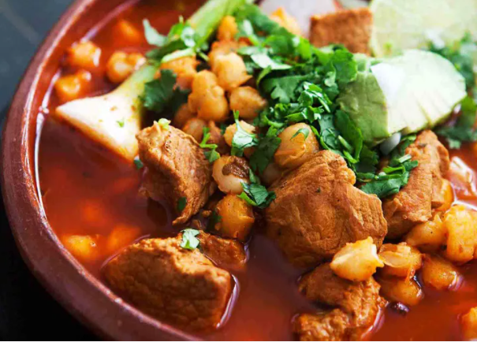

Pozole Rojo (Mexican Pork and Hominy Stew) -
by Elise Bauer
December
23, 2021.
Traditional Mexican pozole (posole) is a rich, brothy soup made with pork,
hominy, and red chiles. Pile your bowl with toppings like shredded cabbage, radishes, cilantro, lime,
and avocado!

Prep Time: 30 mins
Cook time: 3 hrs
Yield: 12 servings
Nutrition facts: 771 Calories
Ingredients:
- 4 ounces dried guajillo or ancho chiles, or a combination of both
- Salt
- 3/4 cup of sugar
- 1 large (108 ounce, 6 lb 12 oz, 3 kg) can white hominy, drained and
rinsed
- 3 pounds pork shoulder (preferably with bone), cut into 1 to 1 1/2 inch
cubes
(can also use pork shanks), make sure to use a cut well marbled with fat
- 8 cloves garlic, 4 cloves roughly chopped, and 4 whole cloves
- 3 bay leaves
- 1 teaspoon ground cumin
- 2 tablespoons dry oregano (Mexican oregano if available)
Garnishes (can prep while pozole is cooking):
- 1/2 small cabbage, thinly sliced
- 1 bunch cilantro, chopped
- 1/2 white onion, chopped
- 2 avocados, chopped
- 4 limes, quartered
- 1 bunch red radishes, sliced thin
- 12 to 24 tostada shells (see Recipe Note)
Instructions:
-
Boil 5 quarts water:
Fill a large 10-12 quart stockpot with 5 quarts of water. Set on heat to bring to a boil while you
proceed with the next steps.
-
Heat the chiles, cover with 3 cups hot water:
Remove and discard the stems, seeds, and large veins from the chili pods. Heat a cast iron pan on
medium high and heat the chili pods for a couple minutes, until they begin to soften. Do not let
them burn.
While the chilies are heating, bring a medium pot with 3 cups of water to a simmer and remove from
heat. Once the chiles have softened, add the chiles to the pot hot water and cover.
Let the chiles soak in the hot water for 15 to 20 minutes.
-
Brown the pork, add garlic:
Heat a tablespoon or two of olive oil (enough to coat the bottom of the pan) in a large sauté pan on
medium high heat. Pat the pork pieces dry with paper towels. Sprinkle them generously with salt.
Working in batches, taking care not to crowd the pan or stir the meat much, brown the meat on all
sides.
Right at the end of browning the meat, add 4 cloves of roughly chopped garlic to the pan with the
meat, let cook with the meat for about a minute.
-
Add pork and spices to large pot of boiling water:
Once the meat has browned, transfer it to the large stockpot of boiling water. Scrape up any browned
bits at the bottom of the pan, and any garlic, and add those to the pot as well. Add the rinsed
hominy.
Add bay leaves, cumin, and oregano. When you put the oregano in, smoosh together with your hands so
that the oregano breaks up more as it goes in. Add a tablespoons of salt. Bring to a simmer, reduce
the heat and cook for 15 minutes.
-
Prepare the red sauce:
by puréeing in a blender the chilies, 2 1/2 cups or so of their soaking liquid, a teaspoon of salt,
and 4 cloves of garlic. (To prevent the blender from creating too much pressure, it's probably best
to start with the chiles and garlic and only a cup of the liquid in the blender, and then adding the
rest of the liquid.)
Strain the red sauce through a sieve, discarding the tough bits of the sauce.
-
Add red chili sauce to the pot with the pork and hominy:
Add another couple teaspoons of salt. Return to a simmer, lower the heat to just high enough to
maintain a simmer, partially covered.
-
Cook for 2 to 3 hours until the pork is completely tender:
Skim away excess fat. Taste for seasoning and add more salt to taste (you will likely need more than
you expect, perhaps a tablespoon or more.)
The resulting soup should be rather brothy, as you will be adding a lot garnishes. Add more water if
necessary.
-
Assemble garnishes:
When getting ready to serve the pozole, you can prep the garnishes (slice the cabbage, chop the
cilantro, etc.)
To serve, arrange the garnishes in bowls on the table and serve the pozole soup into bowls. Let your
guests pick and choose which garnishes they would like on their pozole.
Serve with tostada shells (or tortilla chips if you can't find tostada shells).
1 comment:
From Jorge Helgueros, December 23, 2021 -- thank you, I will give it a try coming weekend.